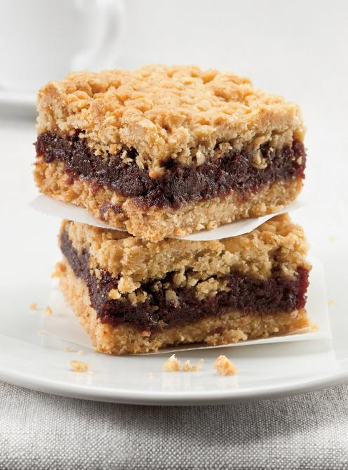

Date Squares

What is it?
A traditional Canadian dessert with deep roots in Canadian baking culture with British influence. It is a delicious sweet date filling sandwiched between a delectable oat crumble.
This dessert gained popularity in the early 20th century, and is still very much a staple at family gatherings.
This recipe will take 1 hour 20 minutes and yield 9-16 squares
For the Filling, you will need the following 5 ingredients:
- 2 1/2 cup Medjool Dates, pitted and chopped, packed lightly
- 1 cup Water
- 2 tablespoons Lemon Juice
- 2 tablespoons Brown Sugar
- 1/2 teaspoon Baking Soda
For the Oat Crumble, you will need the following 5 ingredientsL:
- 1 3/4 cup Quick Cooking Oats
- 1 cup All-Purpose Flour
- 3/4 cup Brown Sugar
- 1/4 teaspoon Baking Powder
- 3/4 cup Salted Butter, softened